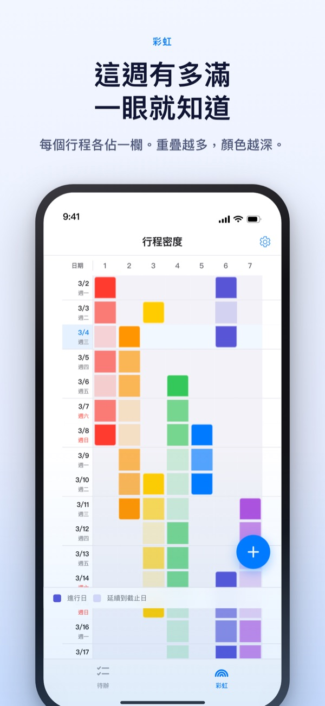
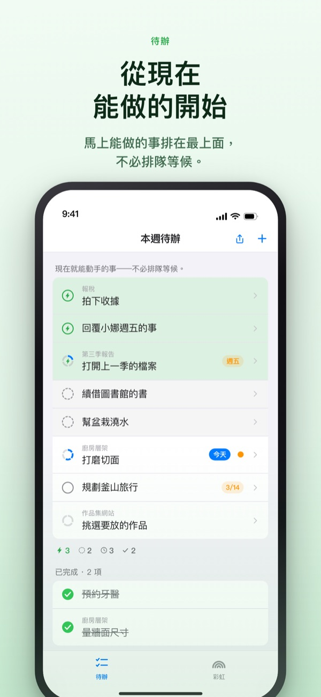
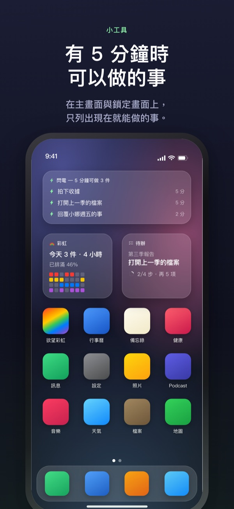

忙的那週提早看見，
空出的 5 分鐘不再溜走
事情疊得越多，彩虹的顏色就越深。把大任務拆成步驟，等有了空檔，馬上能做的那一步已經在最上面等著。
彩虹、任務拆解、計時器以及與 Mac 同步皆免費。

親手分分看
「第三季報告」已經拆成五個步驟。選一個步驟，改改所需時間，或把兩個問題的答案翻過來試試。只有兩題都答「是」的步驟，才是 5 分鐘就能拿起來做的碎片。
行事曆看起來很空，這一週卻讓人喘不過氣？
行事曆只告訴你有沒有排行程，不會告訴你疊了幾層。三個截止日擠在同一週，常常要走進那一週才發現；中間冒出來的 5 分鐘，也在翻待辦清單時悄悄過去。欲望彩虹把一週畫成格子，疊得越多顏色越深，還幫你把空檔裡能做的事另外挑出來。
兩個問題就能分清
把大任務拆成步驟後，每一步只問兩件事：不用暖身就能直接開始嗎？5 分鐘內能一口氣做完嗎？
兩題都答「是」的才是碎片。答案由 App 依時間和寫下的字先填好，你只在它判斷錯時翻過來。
有空檔時，只看最上面
把待辦往右滑加上閃電，它就會插隊到最上面。不必讀完整張清單，現在能做的就在那裡。
步驟之間要不要互相等待，每組只決定一次。依序時，排前面的是還沒完成的第一步；不限順序時，排前面的是現在就能拿起的碎片。

不打開 App 也看得到
計時器一路倒數到行程結束的時刻，剩餘時間在動態島和鎖定畫面上也看得到。
主畫面與鎖定畫面小工具會顯示正在做的事、5 分鐘能做的事，以及本週的彩虹。（小工具屬於 Pro）

三個步驟就能開始
- 1
畫出行程
長按開始那天的空格，再點一下結束那天，彩虹上就多了一條線。
- 2
把大任務拆開
點開待辦寫下步驟，選好時間即可，兩個問題的答案 App 會先填上。
- 3
有空就看最上面
碎片和加了閃電的項目不用排隊，都聚在最上面。
畫面上會看到的詞
- 深色格 · 淺色格
- 真正動手的日子，以及到結束日為止剩下的期間
- 一整列都排滿
- 同時推進的事太多，一件延誤整天都會被拖到的日子
- 碎片
- 兩個問題都答「是」，空出 5 分鐘就能做的步驟
- 短整塊
- 不用暖身，但在碎片時間裡做不完的步驟，坐下來一次做完
- 整塊
- 需要暖身或超過 45 分鐘的步驟，放進預留好的時間
- 閃電
- 你自己加的「馬上做」標記，會插隊到最上面
- 依序 · 不限順序
- 步驟之間是否互相等待，每組決定一次
- 帳本
- 一週的結算：剩下的、找回的時間、喘口氣的時間，各記各的，不相加
時間由下往上累加，大任務的時間就是各步驟時間的總和。
過好今天需要的，都免費
免費
- 彩虹（行程密度格子）
- 任務拆解與兩個問題
- 閃電、步驟順序
- 計時器（動態島 · 鎖定畫面）
- 透過 iCloud 與 Mac App「彩虹工坊」同步
- 最近兩週的帳本
彩虹 Plus · 彩虹 Pro
- Plus：行程統計，兩週以前的帳本
- Pro：包含 Plus 全部內容，再加上主畫面與鎖定畫面小工具
- Pro：從行事曆匯入並持續映照
- Pro：行程共享（唯讀）
- Pro：Mac「彩虹工坊」Pro 一併解鎖
皆可選擇年度訂閱或一次性買斷
收費的只有回顧過去幾週，以及把內容帶到 App 外面這兩類。以前買過 Pro 或仍在月訂閱中的使用者，現在依然是 Pro。
常見問題
一定要註冊帳號或登入 iCloud 嗎？
一個人用不需要。不必註冊，內容都存在裝置裡。想在其他裝置或 Mac App 上同步，或使用共享功能，才需要登入 iCloud。
兩個問題的答案判斷錯了。
點開步驟，把「是」和「否」換過來就好。你自己決定的答案優先於 App 的判定。想交還給 App，點「恢復為 App 的判定」。沒填時間的步驟無法判斷能否在 5 分鐘內做完，所以不算碎片。
可以和別人一起看嗎？
可以用邀請連結把自己的行程以唯讀方式共享（Pro），也可以和受邀的人一起讀寫同一份待辦清單。拿到連結的人都能加入，請只傳給要一起用的人。這與 Apple 家人共享無關。
行事曆 App 裡的行程也會顯示嗎？
所選行事曆的行程會一起映照在彩虹和當天的畫面上（Pro）。只讀取，不會在行事曆裡寫入任何東西。
可以在小工具上打勾嗎？
小工具只用來檢視。點一下會直接打開待辦畫面，請在 App 裡打勾。
Mac App 要另外購買嗎？
彩虹工坊是 Mac App Store 上另外的 macOS App。使用同一個 iCloud 帳號時，待辦和每週計畫會自動同步，同步不收費。
以前寫的待辦還在嗎？
在。待辦、步驟和填好的時間都會保留。以前選過的開工條件標籤，會由 App 依兩個問題重新判定。
寫下的內容存在哪裡？
沒有伺服器。內容只在你的裝置和你自己的 iCloud 裡，開發者看不到。不使用廣告識別碼和位置資訊，只傳送無法辨識個人的匿名使用統計，可在設定中關閉。
怎麼取消訂閱？
在「設定」App 的 Apple 帳號 > 訂閱項目中取消。若未在當期結束前至少 24 小時取消，會以相同價格自動續訂。買斷只需付款一次。
用起來卡住或發現哪裡怪怪的，請寫信到 leeo@kakao.com。App 的設定裡也有聯絡入口。